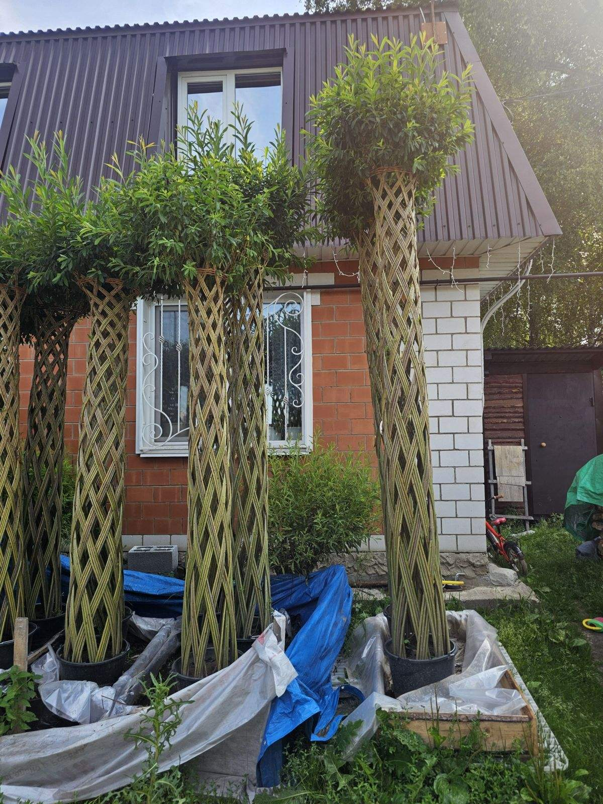
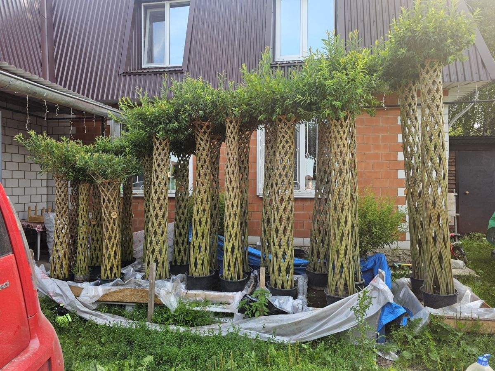
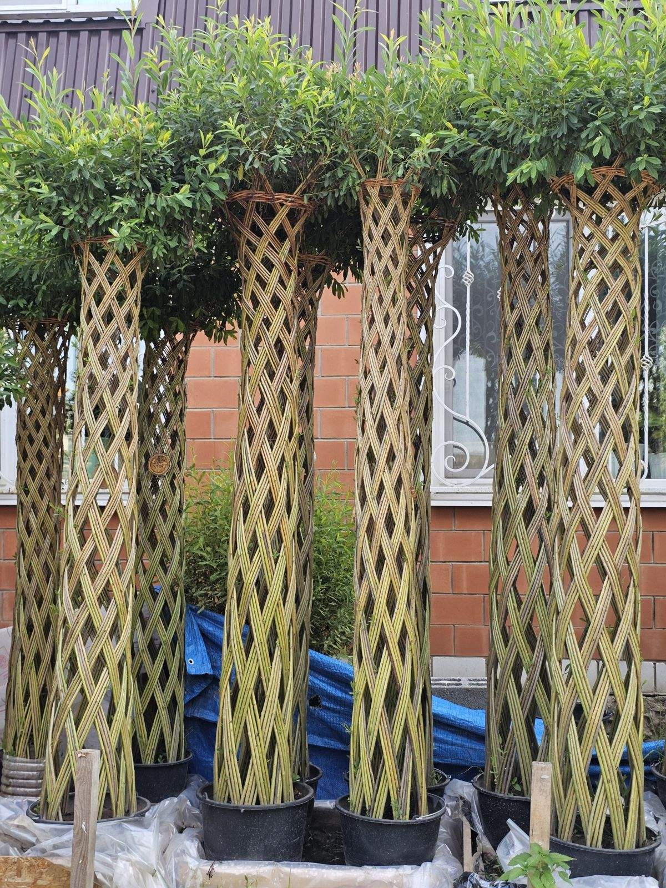
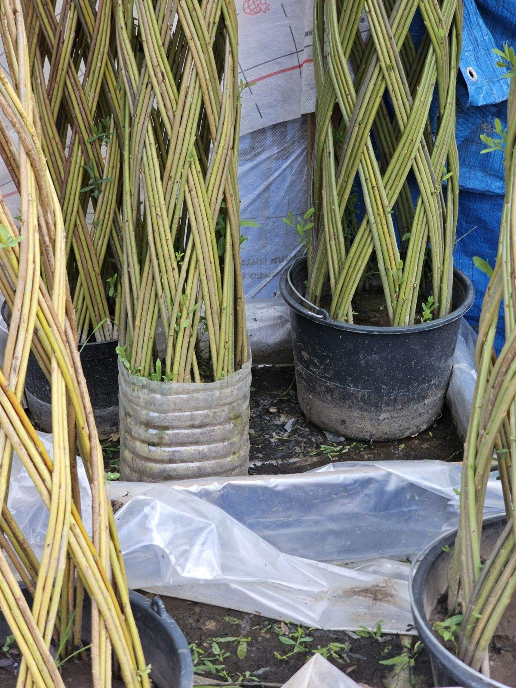
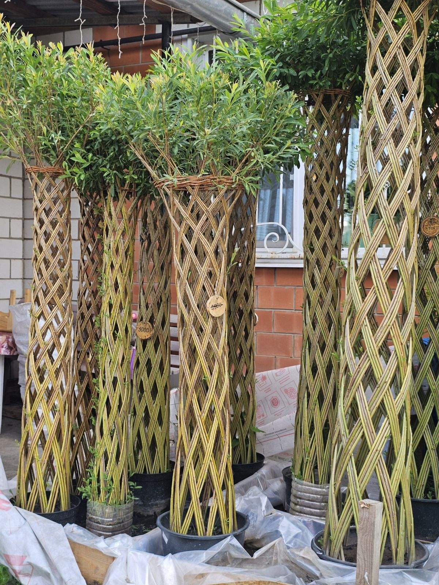
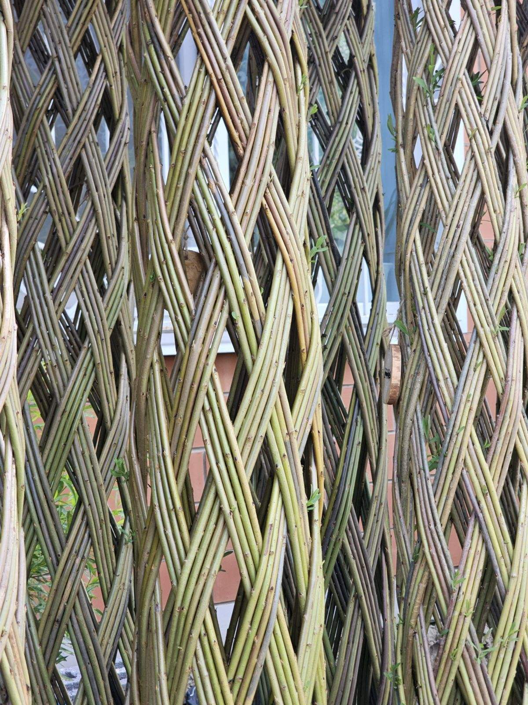

Живые плетёные деревья
Мы выращиваем и плетём деревья из живой ивы — они растут, зеленеют и с каждым годом становятся крепче.
Деревья и работы на заказ
Готовые деревья
В наличии деревья разной высоты — от компактных до трёхметровых. Цену и наличие подскажем в переписке: каждое дерево уникально.
Плетение на заказ
Сплетём дерево нужной высоты, живую изгородь, арку или другое изделие по вашей задумке. Обсудим сроки и материалы.
Советы по уходу
Расскажем, как посадить и поливать, чтобы дерево прижилось и зеленело. Ива неприхотлива — справится даже новичок.
Деревья, которые живут
Каждый ствол сплетён вручную из десятков живых ивовых прутьев. Посадите такое дерево — и оно приживётся, зазеленеет и будет радовать десятилетиями.






Плетёная ива — живое дерево
Посадка
- Выбор солнечного места и влажной почвы.
- Яма в 1,5–2 раза больше корней, дренаж.
- Саженец вертикально, без заглубления, уплотнить.
- Обильный полив и временная опора.
Уход
- Регулярный обильный полив (еженедельно в жару).
- Удаление поросли со ствола (обязательно!).
- Стрижка кроны 2–3 раза за сезон (для формы «шар»).
- Весенняя азотная подкормка, зимнее мульчирование.
Секрет красоты: регулярно удаляйте поросль и стригите крону — так плетёный ствол остаётся аккуратным, а крона густой.